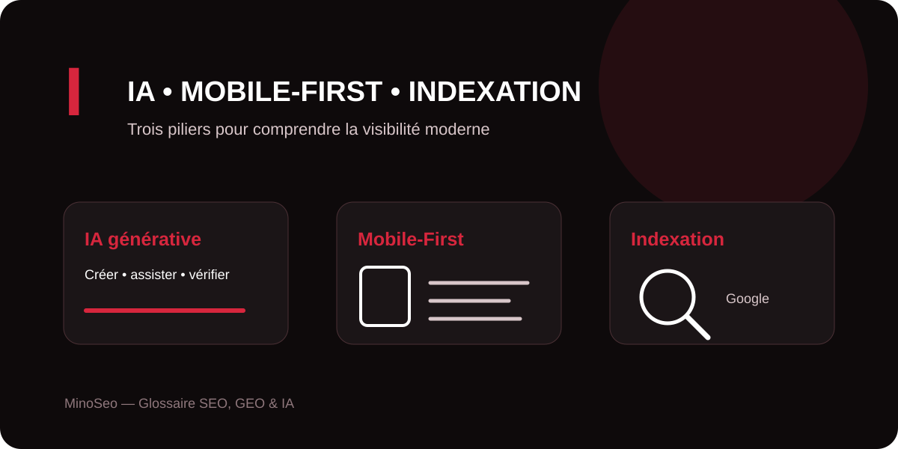

À l’ère des moteurs enrichis par l’intelligence artificielle, la visibilité d’un site repose toujours sur des fondamentaux : produire une information utile, rendre les pages accessibles aux robots et proposer une expérience mobile solide. Ce guide MinoSeo explique trois notions en I qui relient SEO technique, GEO et intelligence artificielle.

IA generative
L’IA générative désigne des systèmes d’intelligence artificielle capables de produire de nouveaux contenus — texte, image, audio, vidéo ou code — à partir d’une instruction et de modèles appris sur de grandes quantités de données. Les assistants conversationnels et les moteurs de réponse génératifs ont profondément modifié la manière dont les internautes cherchent et synthétisent l’information.
Pour le SEO et le GEO, l’enjeu n’est pas de produire davantage de textes automatiquement, mais de créer une information exacte, distinctive, structurée et réellement utile. Une IA peut accélérer la recherche, la préparation d’un plan ou certaines tâches éditoriales, mais ses sorties doivent être vérifiées : elles peuvent contenir des erreurs factuelles ou des hallucinations.
Dans les expériences de recherche générative, les fondamentaux SEO restent importants : une architecture technique claire, un contenu public et explorable, des informations originales et une réponse satisfaisante aux besoins des visiteurs facilitent la visibilité aussi bien dans la recherche classique que dans les fonctionnalités alimentées par l’IA.
Index mobile first de Google
L’indexation Mobile-First signifie que Google utilise principalement la version mobile du contenu d’un site, explorée avec son agent pour smartphone, pour l’indexation et le classement. La version affichée sur ordinateur ne doit donc pas contenir des informations essentielles absentes de la version mobile.
Pour un site responsive, l’objectif est de conserver sur mobile le même contenu principal, les titres, les liens internes, les images importantes et leurs textes alternatifs. Les données structurées et les principales métadonnées doivent également rester cohérentes. Un design mobile simplifié ne doit pas devenir un contenu mobile appauvri.
| Élément à contrôler | Bonne pratique |
|---|---|
| Contenu | Conserver les informations importantes sur mobile et desktop. |
| Navigation | Maintenir des liens internes accessibles et une architecture claire. |
| Images | Utiliser des médias de qualité, accessibles et correctement décrits. |
| Performance | Limiter les ressources lourdes et surveiller l’expérience réelle sur smartphone. |
Le responsive design, qui conserve la même URL et le même HTML de base tout en adaptant l’affichage à la taille de l’écran, constitue généralement une approche simple à maintenir. Au-delà de l’indexation, une bonne expérience mobile favorise aussi la navigation, l’engagement et la conversion.
Indexation site google
L’indexation d’un site dans Google correspond au processus par lequel Google analyse une page découverte et explorée, en comprend le contenu puis peut l’enregistrer dans son index. Être exploré ne signifie donc pas automatiquement être indexé, et être indexé ne garantit pas une bonne position.
Le fonctionnement peut être résumé en trois étapes : exploration, lorsque Googlebot découvre et télécharge les ressources ; indexation, lorsque Google analyse le contenu, les balises, les images et la canonicalisation ; puis diffusion, lorsque ses systèmes sélectionnent des résultats pertinents pour une recherche.
Pour rendre une page éligible à l’indexation, Googlebot ne doit pas être bloqué, la page doit fonctionner correctement — généralement avec un statut HTTP 200 — et elle doit proposer du contenu indexable. Un sitemap XML facilite la découverte des URL importantes, tandis que Google Search Console permet de contrôler leur état et d’identifier des problèmes d’exploration ou d’indexation.
Comment relier IA, mobile et indexation dans une stratégie SEO/GEO ?
Ces trois notions forment une chaîne logique. L’IA générative transforme la création et la consommation d’information ; le Mobile-First rappelle que cette information doit rester complète et accessible sur smartphone ; l’indexation détermine enfin si Google peut traiter la page et la rendre éligible à ses résultats.
MinoSeo, agence SEO/GEO depuis plus de 15 ans, accompagne les entreprises dans l’audit technique, l’optimisation de l’indexation, la stratégie éditoriale et l’adaptation des contenus aux nouveaux environnements de recherche alimentés par l’IA.
Votre site est-il réellement prêt pour Google et la recherche par IA ?
Identifiez les freins d’indexation, les écarts mobile et les opportunités SEO/GEO avec une analyse adaptée à vos priorités.
Demander un audit gratuit